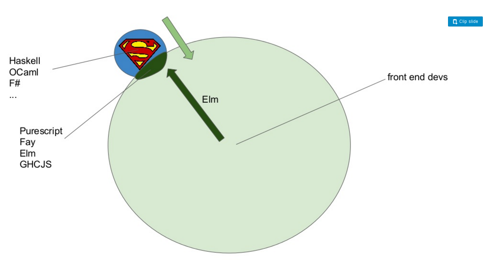
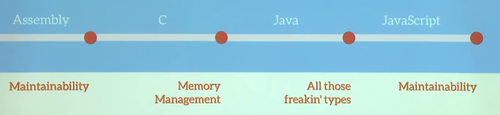
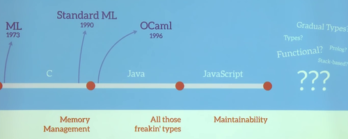
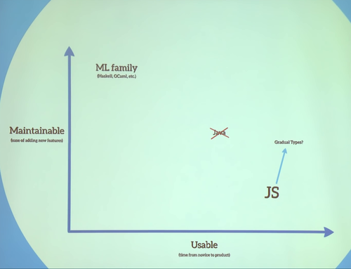
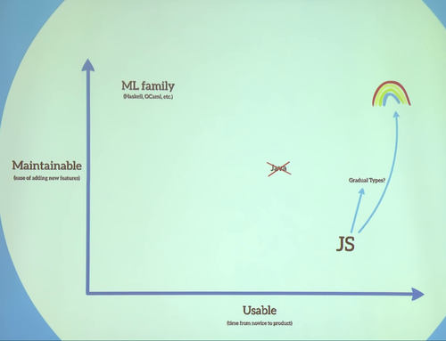
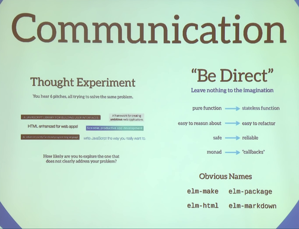
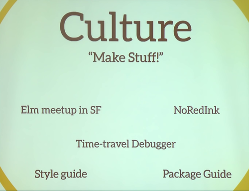
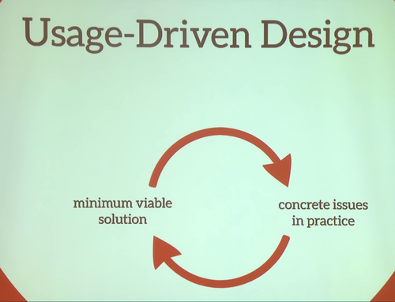
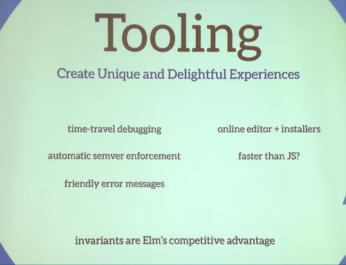
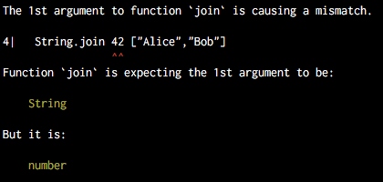

Автор: Давыденков Михаил
С чего всё началось
Жили-были хаскелисты, и было им одиноко. И решили они притащить хаскель во фронтенд во имя добра. И всё завертелось..
Немного про историю развития языков
Каждое поколение программистов боролось со своими проблемами
Mainstream языки в настоящее время находятся под влиянием ФП и достаточно много нового адаптируют под себя
Однако до конца не ясно в какую сторону развивается JS
Есть два стула две оси. На одной доступность языка для понимания и скорость вхождения в язык, на другой - поддерживаемость и расширяемость написанных программ. Что выберете?
Однако не всё так однозначно
Светлое будущее
В основе нового языка авторы закладывали некоторые идеи
Дружелюбность к пользователю
Формирование современного коммьюнити
Минимализм в фичах
Tooling, который в разы сложнее создать в JS и языках-конкурентах (TypeScript, Dart)
Практически отсутствие рантайм ошибок (защита от опечаток и грубых логических несостыковок), управление эффектами, надежда на WebAssemly и многое другое
Но всё же в каждой бочке мёда есть ложка дёгтя. И не одна.. (я остался разочарован языком)
Минусы
Возможно у языка есть будущее. Однако на текущий момент чтобы им свободно пользоваться нужно иметь очень высокий уровень квалификации. Я пока не осилил.